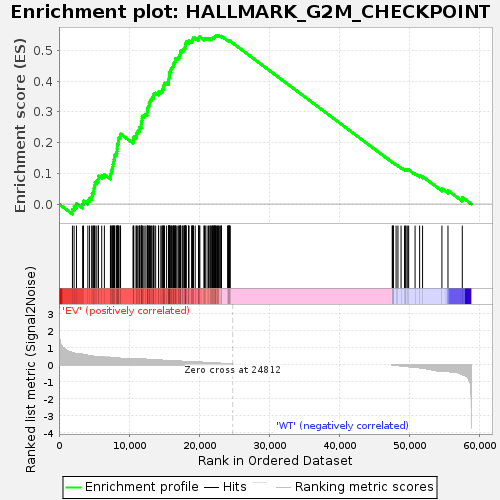

| | | Dataset | EV_WT_express.EV_WT.cls#EV_versus_WT |
| Phenotype | EV_WT.cls#EV_versus_WT |
| Upregulated in class | EV |
| GeneSet | HALLMARK_G2M_CHECKPOINT |
| Enrichment Score (ES) | 0.5469675 |
| Normalized Enrichment Score (NES) | 1.5172288 |
| Nominal p-value | 0.0 |
| FDR q-value | 0.025228923 |
| FWER p-Value | 0.045 |
Table: GSEA Results Summary

Fig 1: Enrichment plot: HALLMARK_G2M_CHECKPOINT
Profile of the Running ES Score & Positions of GeneSet Members on the Rank Ordered List
| SYMBOL | TITLE | RANK IN GENE LIST | RANK METRIC SCORE | RUNNING ES | CORE ENRICHMENT | | 1 | BRCA2 | NNN | 1918 | 0.688 | -0.0174 | Yes |
| 2 | MEIS1 | NNN | 2153 | 0.656 | -0.0068 | Yes |
| 3 | RPS6KA5 | NNN | 2494 | 0.644 | 0.0017 | Yes |
| 4 | NUSAP1 | NNN | 3370 | 0.591 | -0.0001 | Yes |
| 5 | KIF15 | NNN | 3498 | 0.580 | 0.0106 | Yes |
| 6 | STIL | NNN | 4115 | 0.533 | 0.0119 | Yes |
| 7 | RASAL2 | NNN | 4363 | 0.512 | 0.0191 | Yes |
| 8 | HMMR | NNN | 4675 | 0.495 | 0.0248 | Yes |
| 9 | BARD1 | NNN | 4724 | 0.491 | 0.0348 | Yes |
| 10 | PLK1 | NNN | 4892 | 0.480 | 0.0426 | Yes |
| 11 | ABL1 | NNN | 4977 | 0.474 | 0.0517 | Yes |
| 12 | RBL1 | NNN | 5059 | 0.470 | 0.0608 | Yes |
| 13 | CENPA | NNN | 5146 | 0.466 | 0.0697 | Yes |
| 14 | EGF | NNN | 5394 | 0.455 | 0.0755 | Yes |
| 15 | TROAP | NNN | 5622 | 0.449 | 0.0816 | Yes |
| 16 | ESPL1 | NNN | 5631 | 0.448 | 0.0915 | Yes |
| 17 | DMD | NNN | 6094 | 0.438 | 0.0933 | Yes |
| 18 | KIF23 | NNN | 6475 | 0.420 | 0.0962 | Yes |
| 19 | PBK | NNN | 7334 | 0.416 | 0.0908 | Yes |
| 20 | TFDP1 | NNN | 7371 | 0.414 | 0.0993 | Yes |
| 21 | MYBL2 | NNN | 7448 | 0.410 | 0.1071 | Yes |
| 22 | KIF2C | NNN | 7562 | 0.405 | 0.1142 | Yes |
| 23 | AURKA | NNN | 7648 | 0.401 | 0.1217 | Yes |
| 24 | STMN1 | NNN | 7696 | 0.399 | 0.1297 | Yes |
| 25 | EXO1 | NNN | 7762 | 0.396 | 0.1374 | Yes |
| 26 | HMGB3 | NNN | 7824 | 0.393 | 0.1451 | Yes |
| 27 | NDC80 | NNN | 7918 | 0.391 | 0.1522 | Yes |
| 28 | HMGN2 | NNN | 7942 | 0.390 | 0.1604 | Yes |
| 29 | MCM6 | NNN | 8166 | 0.380 | 0.1651 | Yes |
| 30 | NUP98 | NNN | 8260 | 0.375 | 0.1718 | Yes |
| 31 | PRIM2 | NNN | 8286 | 0.375 | 0.1797 | Yes |
| 32 | NEK2 | NNN | 8309 | 0.373 | 0.1876 | Yes |
| 33 | PLK4 | NNN | 8323 | 0.373 | 0.1957 | Yes |
| 34 | EFNA5 | NNN | 8454 | 0.367 | 0.2016 | Yes |
| 35 | KPNA2 | NNN | 8476 | 0.366 | 0.2094 | Yes |
| 36 | TTK | NNN | 8552 | 0.363 | 0.2162 | Yes |
| 37 | TMPO | NNN | 8740 | 0.359 | 0.2210 | Yes |
| 38 | MKI67 | NNN | 8780 | 0.357 | 0.2282 | Yes |
| 39 | BIRC5 | NNN | 10562 | 0.352 | 0.2057 | Yes |
| 40 | SMC2 | NNN | 10620 | 0.350 | 0.2125 | Yes |
| 41 | BUB1 | NNN | 10675 | 0.348 | 0.2193 | Yes |
| 42 | SS18 | NNN | 11005 | 0.342 | 0.2213 | Yes |
| 43 | RACGAP1 | NNN | 11020 | 0.342 | 0.2286 | Yes |
| 44 | CCNB2 | NNN | 11156 | 0.336 | 0.2338 | Yes |
| 45 | MTF2 | NNN | 11288 | 0.333 | 0.2389 | Yes |
| 46 | ORC5 | NNN | 11487 | 0.327 | 0.2428 | Yes |
| 47 | TOP2A | NNN | 11493 | 0.327 | 0.2500 | Yes |
| 48 | CDC6 | NNN | 11714 | 0.319 | 0.2533 | Yes |
| 49 | CASP8AP2 | NNN | 11721 | 0.319 | 0.2603 | Yes |
| 50 | E2F3 | NNN | 11754 | 0.318 | 0.2668 | Yes |
| 51 | LBR | NNN | 11818 | 0.315 | 0.2728 | Yes |
| 52 | SRSF2 | NNN | 11849 | 0.315 | 0.2792 | Yes |
| 53 | CCNA2 | NNN | 11861 | 0.314 | 0.2860 | Yes |
| 54 | PRC1 | NNN | 12106 | 0.307 | 0.2887 | Yes |
| 55 | MCM5 | NNN | 12285 | 0.302 | 0.2923 | Yes |
| 56 | RBM14 | NNN | 12580 | 0.296 | 0.2939 | Yes |
| 57 | TPX2 | NNN | 12583 | 0.296 | 0.3004 | Yes |
| 58 | HUS1 | NNN | 12622 | 0.295 | 0.3063 | Yes |
| 59 | CTCF | NNN | 12651 | 0.294 | 0.3124 | Yes |
| 60 | CHEK1 | NNN | 12729 | 0.292 | 0.3175 | Yes |
| 61 | ODF2 | NNN | 12844 | 0.288 | 0.3220 | Yes |
| 62 | KIF22 | NNN | 12860 | 0.288 | 0.3281 | Yes |
| 63 | CDC27 | NNN | 12932 | 0.285 | 0.3332 | Yes |
| 64 | GINS2 | NNN | 13063 | 0.281 | 0.3373 | Yes |
| 65 | LIG3 | NNN | 13169 | 0.279 | 0.3417 | Yes |
| 66 | CCNF | NNN | 13288 | 0.276 | 0.3458 | Yes |
| 67 | AURKB | NNN | 13494 | 0.270 | 0.3483 | Yes |
| 68 | XPO1 | NNN | 13508 | 0.270 | 0.3541 | Yes |
| 69 | DBF4 | NNN | 13546 | 0.269 | 0.3594 | Yes |
| 70 | HIF1A | NNN | 13792 | 0.262 | 0.3610 | Yes |
| 71 | RAD21 | NNN | 14202 | 0.252 | 0.3597 | Yes |
| 72 | CDK1 | NNN | 14209 | 0.252 | 0.3651 | Yes |
| 73 | NASP | NNN | 14528 | 0.247 | 0.3652 | Yes |
| 74 | ILF3 | NNN | 14688 | 0.243 | 0.3679 | Yes |
| 75 | MAPK14 | NNN | 14732 | 0.242 | 0.3725 | Yes |
| 76 | CDKN3 | NNN | 14857 | 0.239 | 0.3757 | Yes |
| 77 | SRSF1 | NNN | 14878 | 0.238 | 0.3807 | Yes |
| 78 | INCENP | NNN | 14931 | 0.237 | 0.3850 | Yes |
| 79 | NUMA1 | NNN | 14998 | 0.235 | 0.3892 | Yes |
| 80 | KIF4A | NNN | 15056 | 0.234 | 0.3934 | Yes |
| 81 | SMC1A | NNN | 15352 | 0.231 | 0.3935 | Yes |
| 82 | CENPF | NNN | 15621 | 0.225 | 0.3939 | Yes |
| 83 | SQLE | NNN | 15648 | 0.225 | 0.3985 | Yes |
| 84 | CDC45 | NNN | 15654 | 0.225 | 0.4034 | Yes |
| 85 | NOLC1 | NNN | 15665 | 0.224 | 0.4082 | Yes |
| 86 | E2F2 | NNN | 15716 | 0.223 | 0.4123 | Yes |
| 87 | SYNCRIP | NNN | 15723 | 0.223 | 0.4171 | Yes |
| 88 | SMAD3 | NNN | 15748 | 0.222 | 0.4217 | Yes |
| 89 | BUB3 | NNN | 15759 | 0.222 | 0.4264 | Yes |
| 90 | CKS1B | NNN | 15801 | 0.221 | 0.4306 | Yes |
| 91 | POLE | NNN | 15967 | 0.217 | 0.4326 | Yes |
| 92 | G3BP1 | NNN | 15970 | 0.217 | 0.4374 | Yes |
| 93 | RAD23B | NNN | 16008 | 0.216 | 0.4416 | Yes |
| 94 | SLC7A1 | NNN | 16112 | 0.214 | 0.4446 | Yes |
| 95 | CDC20 | NNN | 16233 | 0.211 | 0.4472 | Yes |
| 96 | CDC7 | NNN | 16345 | 0.209 | 0.4499 | Yes |
| 97 | KPNB1 | NNN | 16360 | 0.208 | 0.4543 | Yes |
| 98 | MAD2L1 | NNN | 16379 | 0.208 | 0.4586 | Yes |
| 99 | SMARCC1 | NNN | 16487 | 0.206 | 0.4614 | Yes |
| 100 | KIF11 | NNN | 16568 | 0.205 | 0.4646 | Yes |
| 101 | UPF1 | NNN | 16593 | 0.204 | 0.4687 | Yes |
| 102 | STAG1 | NNN | 16603 | 0.204 | 0.4731 | Yes |
| 103 | CDK4 | NNN | 16797 | 0.199 | 0.4742 | Yes |
| 104 | KIF20B | NNN | 16984 | 0.195 | 0.4753 | Yes |
| 105 | MCM3 | NNN | 17090 | 0.193 | 0.4778 | Yes |
| 106 | NUP50 | NNN | 17226 | 0.189 | 0.4797 | Yes |
| 107 | E2F1 | NNN | 17253 | 0.189 | 0.4835 | Yes |
| 108 | TRAIP | NNN | 17263 | 0.188 | 0.4875 | Yes |
| 109 | CUL3 | NNN | 17321 | 0.187 | 0.4907 | Yes |
| 110 | CHAF1A | NNN | 17336 | 0.187 | 0.4946 | Yes |
| 111 | LMNB1 | NNN | 17351 | 0.186 | 0.4985 | Yes |
| 112 | MEIS2 | NNN | 17570 | 0.181 | 0.4988 | Yes |
| 113 | CHMP1A | NNN | 17668 | 0.178 | 0.5011 | Yes |
| 114 | AMD1 | NNN | 17833 | 0.175 | 0.5022 | Yes |
| 115 | HMGA1 | NNN | 17862 | 0.174 | 0.5056 | Yes |
| 116 | UCK2 | NNN | 17980 | 0.171 | 0.5074 | Yes |
| 117 | E2F4 | NNN | 17986 | 0.171 | 0.5111 | Yes |
| 118 | SFPQ | NNN | 17998 | 0.170 | 0.5147 | Yes |
| 119 | CUL5 | NNN | 18012 | 0.170 | 0.5182 | Yes |
| 120 | SUV39H1 | NNN | 18082 | 0.168 | 0.5208 | Yes |
| 121 | POLA2 | NNN | 18118 | 0.167 | 0.5239 | Yes |
| 122 | MCM2 | NNN | 18130 | 0.167 | 0.5274 | Yes |
| 123 | CDC25B | NNN | 18477 | 0.165 | 0.5252 | Yes |
| 124 | CUL4A | NNN | 18489 | 0.165 | 0.5287 | Yes |
| 125 | RPA2 | NNN | 18540 | 0.164 | 0.5315 | Yes |
| 126 | TACC3 | NNN | 18940 | 0.156 | 0.5281 | Yes |
| 127 | EZH2 | NNN | 18948 | 0.156 | 0.5315 | Yes |
| 128 | DTYMK | NNN | 19061 | 0.154 | 0.5330 | Yes |
| 129 | CUL1 | NNN | 19102 | 0.153 | 0.5357 | Yes |
| 130 | ORC6 | NNN | 19131 | 0.152 | 0.5386 | Yes |
| 131 | SLC38A1 | NNN | 19167 | 0.151 | 0.5413 | Yes |
| 132 | SRSF10 | NNN | 19432 | 0.145 | 0.5401 | Yes |
| 133 | UBE2C | NNN | 19909 | 0.135 | 0.5349 | Yes |
| 134 | MNAT1 | NNN | 19926 | 0.134 | 0.5376 | Yes |
| 135 | MARCKS | NNN | 19971 | 0.133 | 0.5399 | Yes |
| 136 | TOP1 | NNN | 19972 | 0.133 | 0.5428 | Yes |
| 137 | KIF5B | NNN | 20094 | 0.131 | 0.5437 | Yes |
| 138 | SNRPD1 | NNN | 20678 | 0.119 | 0.5364 | Yes |
| 139 | FANCC | NNN | 20743 | 0.118 | 0.5379 | Yes |
| 140 | KMT5A | NNN | 20821 | 0.116 | 0.5392 | Yes |
| 141 | CBX1 | NNN | 20954 | 0.112 | 0.5394 | Yes |
| 142 | PURA | NNN | 21252 | 0.106 | 0.5367 | Yes |
| 143 | RAD54L | NNN | 21342 | 0.104 | 0.5375 | Yes |
| 144 | PAFAH1B1 | NNN | 21547 | 0.099 | 0.5362 | Yes |
| 145 | FBXO5 | NNN | 21548 | 0.099 | 0.5384 | Yes |
| 146 | KATNA1 | NNN | 21690 | 0.095 | 0.5381 | Yes |
| 147 | CDC25A | NNN | 21801 | 0.093 | 0.5383 | Yes |
| 148 | YTHDC1 | NNN | 21867 | 0.092 | 0.5393 | Yes |
| 149 | EWSR1 | NNN | 21927 | 0.090 | 0.5403 | Yes |
| 150 | CKS2 | NNN | 21987 | 0.089 | 0.5412 | Yes |
| 151 | CENPE | NNN | 22061 | 0.087 | 0.5419 | Yes |
| 152 | TRA2B | NNN | 22176 | 0.085 | 0.5419 | Yes |
| 153 | ARID4A | NNN | 22205 | 0.085 | 0.5433 | Yes |
| 154 | HOXC10 | NNN | 22264 | 0.084 | 0.5441 | Yes |
| 155 | CCNT1 | NNN | 22282 | 0.083 | 0.5457 | Yes |
| 156 | CCND1 | NNN | 22330 | 0.082 | 0.5467 | Yes |
| 157 | PDS5B | NNN | 22448 | 0.079 | 0.5465 | Yes |
| 158 | HNRNPU | NNN | 22557 | 0.076 | 0.5463 | Yes |
| 159 | SLC7A5 | NNN | 22617 | 0.075 | 0.5470 | Yes |
| 160 | DKC1 | NNN | 22737 | 0.071 | 0.5465 | No |
| 161 | HIRA | NNN | 22802 | 0.069 | 0.5470 | No |
| 162 | PRPF4B | NNN | 22932 | 0.066 | 0.5462 | No |
| 163 | TNPO2 | NNN | 23066 | 0.063 | 0.5453 | No |
| 164 | PTTG1 | NNN | 23177 | 0.060 | 0.5448 | No |
| 165 | GSPT1 | NNN | 23182 | 0.060 | 0.5461 | No |
| 166 | PRMT5 | NNN | 24065 | 0.034 | 0.5318 | No |
| 167 | PML | NNN | 24116 | 0.033 | 0.5316 | No |
| 168 | TGFB1 | NNN | 24180 | 0.030 | 0.5312 | No |
| 169 | TLE3 | NNN | 24217 | 0.029 | 0.5313 | No |
| 170 | SLC12A2 | NNN | 24265 | 0.027 | 0.5311 | No |
| 171 | NCL | NNN | 24285 | 0.026 | 0.5313 | No |
| 172 | ATRX | NNN | 24390 | 0.022 | 0.5300 | No |
| 173 | SMC4 | NNN | 24410 | 0.022 | 0.5302 | No |
| 174 | POLQ | NNN | 47551 | -0.006 | 0.1357 | No |
| 175 | DDX39A | NNN | 47562 | -0.006 | 0.1357 | No |
| 176 | DR1 | NNN | 47674 | -0.013 | 0.1341 | No |
| 177 | ATF5 | NNN | 47692 | -0.014 | 0.1341 | No |
| 178 | ODC1 | NNN | 48088 | -0.035 | 0.1281 | No |
| 179 | HNRNPD | NNN | 48352 | -0.047 | 0.1247 | No |
| 180 | WRN | NNN | 48797 | -0.067 | 0.1186 | No |
| 181 | UBE2S | NNN | 49294 | -0.088 | 0.1121 | No |
| 182 | MYC | NNN | 49465 | -0.095 | 0.1113 | No |
| 183 | HSPA8 | NNN | 49498 | -0.098 | 0.1130 | No |
| 184 | CDKN1B | NNN | 49750 | -0.106 | 0.1110 | No |
| 185 | MT2A | NNN | 49882 | -0.113 | 0.1113 | No |
| 186 | SAP30 | NNN | 50797 | -0.155 | 0.0992 | No |
| 187 | CDKN2C | NNN | 51446 | -0.177 | 0.0921 | No |
| 188 | FOXN3 | NNN | 51865 | -0.206 | 0.0895 | No |
| 189 | PTTG3P | NNN | 54626 | -0.357 | 0.0504 | No |
| 190 | BCL3 | NNN | 55490 | -0.373 | 0.0439 | No |
| 191 | NOTCH2 | NNN | 57533 | -0.585 | 0.0221 | No |
Table: GSEA details [plain text format]
Fig 2: HALLMARK_G2M_CHECKPOINT
Blue-Pink O' Gram in the Space of the Analyzed GeneSet
Fig 3: HALLMARK_G2M_CHECKPOINT: Random ES distribution
Gene set null distribution of ES for HALLMARK_G2M_CHECKPOINT